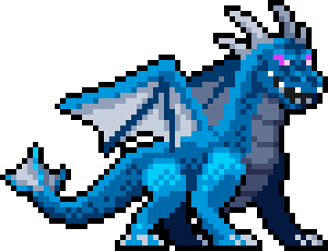

歡迎來到氣象保衛站
與艾倫一起拯救世界，對抗環境污染！
遊戲影片
遊戲特色
氣象保衛站是一款教育與娛樂結合的像素風遊戲，玩家將與艾倫一起挑戰環境問題，擊敗甲烷與二氧化碳等溫室氣體怪物，學習減碳的重要性。
角色介紹
主角：艾倫
艾倫是一名普通的大學生，但意外捲入了一場拯救世界的任務。他將面對許多挑戰，並學會如何使用減碳工具對抗溫室氣體怪物。
支援角色：伍
伍是原本這具身體的主人，因實驗意外成為艾倫的嚮導，提供精神與知識上的支持。

反派：甲烷
甲烷是艾倫的主要對手之一，掌握木之國的權力，帶來許多挑戰。
反派：二氧化碳
二氧化碳是艾倫的另一個主要對手，掌握火之國的權力，帶來許多挑戰。
終極BOSS：災
災是遊戲的最終大反派，象徵著人類過度開發對地球的影響。